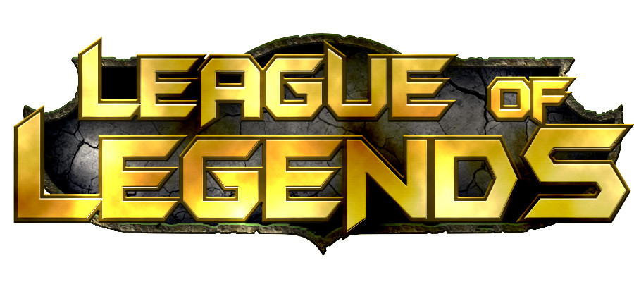

22222222222먼저 무서운 게임인 이유는 빠져버리면
시간가는줄 모르고 계속 게임을 시작하기 때문이다. 이런 무서움 뿐만이
아니라 게임을 같이하는 사람들 중에서 악질분들이 많다.잘하지 못하면 욕을
하는것은 기본이고 서로 싸우기 바빠서 성격이 매우 안좋아질수있다.
특히
패드립을 하는사람들이 종종 있는데 이점은 신고를 하여서 정지를 시킬수 있지만
정지로는 분이 안풀리는 경우가 있기때문에 롤은 하면 안되는 게임이다.
but you do this game please becareful play starting